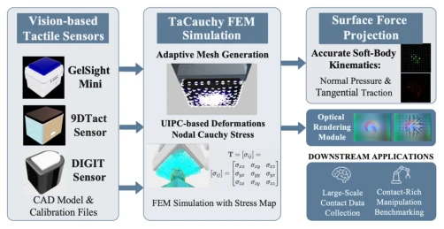
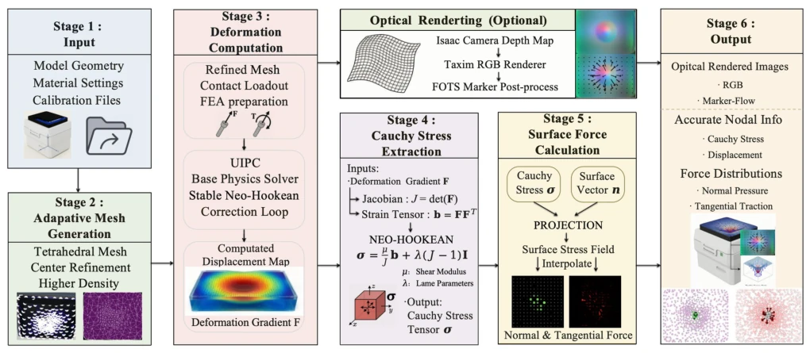
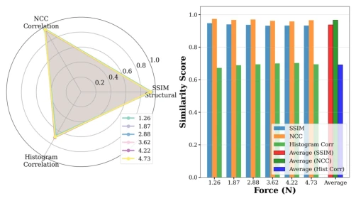
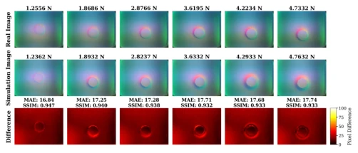
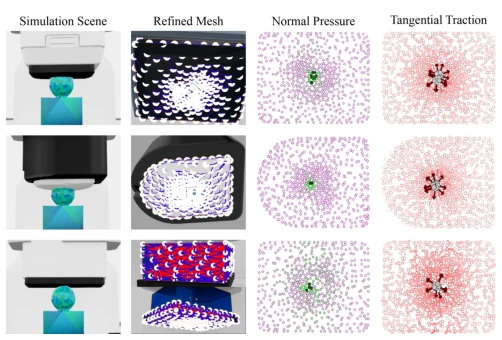
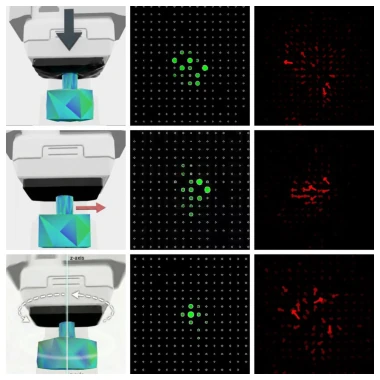

TaCauchy: An Extensible FEM Framework for Vision-Based Tactile Simulation
Hengfei Zhao, Yifan Xie, Junhao Gong, Yue Sun, Kai Zhu, Weihua He abspdf
论文点评Review
这篇论文给触觉仿真圈扔了个“物理炸弹”。TaCauchy 最大的卖点是把 FEM 硬塞进 Isaac Sim，还搞出了 Cauchy 应力张量的直接计算，而不是像某些论文那样靠经验公式猜力。对于搞强化学习的来说，能拿到“机械真值”确实香，毕竟以前很多仿真器要么没力反馈，要么力算得跟瞎蒙一样。不过，作者吹嘘的“可扩展性”其实有点套路，换传感器还得改几何参数，真·即插即用还差口气。性能方面，60 个并行环境能跑 555 FPS 确实亮眼，但材料参数校准是个坑，硅胶老化这种动态特性在仿真里很难完美复刻。总的来说，这是个给 RL 训练提供“物理靠谱”数据的强力工具，但别指望它能自动解决所有材料不确定性。
This paper threw a "physical bomb" into the tactile simulation community. TaCauchy's biggest selling point is forcing FEM into Isaac Sim and achieving direct calculation of the Cauchy stress tensor, rather than guessing forces via empirical formulas like some papers do. For those working on reinforcement learning, obtaining "mechanical ground truth" is indeed valuable, as many previous simulators either lacked force feedback or calculated forces as if blind guessing. However, the author's touted "scalability" is somewhat of a trick; changing sensors still requires modifying geometry parameters, falling short of true plug-and-play. In terms of performance, running 555 FPS with 60 parallel environments is indeed impressive, but material parameter calibration is a pitfall; dynamic characteristics like silicone aging are hard to perfectly replicate in simulation. Overall, this is a powerful tool providing "physically reliable" data for RL training, but do not expect it to automatically solve all material uncertainties.
Visual tactile sensors (VBTS) are crucial in contact manipulation, but existing simulators face a dilemma: either like TACTO [14] and Taxim [15] focusing only on optical rendering, unable to calculate physical forces; or like TacIPC [9] and DIFFTACTILE [12] which use FEM but detach from the Isaac Sim ecosystem, making large-scale parallel reinforcement learning training difficult. More troublesome is that many simplified models (such as TacSL [13]) use spring-damper instead of FEM, sacrificing physical accuracy. Researchers urgently need a framework that can provide high-fidelity visual feedback, output Cauchy stress, pressure distribution, and traction through rigorous mechanical calculations, while also running efficiently on GPUs. This is the problem TaCauchy aims to solve: achieving "physical ground truth" tactile simulation within Isaac Sim.

Fig. 1. TaCauchy: An extensible FEM framework integrating physics-based force computation into Isaac Sim. Our system combines UIPC soft-body dynamics, automatic adaptive mesh refinement, direct stress extraction from hyperelastic constitutive laws, and modular sensor interfaces, enabling effi- cient
The overall process starts with sensor geometry input, first generating a tetrahedral mesh. Here, the WildMeshing algorithm is used, introducing a geometry-aware adaptive refinement strategy, densifying the mesh in contact regions while keeping non-contact areas sparse, balancing accuracy and efficiency. The core physics engine is based on the UIPC solver, adopting the Stable Neo-Hookean hyperelastic constitutive model, capable of handling large deformations and volume incompressibility characteristics. The innovation lies in the stress extraction module: directly calculating the Cauchy stress tensor from the deformation gradient field, projecting it onto the contact surface via the Cauchy stress theorem, and decomposing it into normal pressure and tangential traction. Specific formulas involve Lamé parameter derivation and deformation gradient tensor operations, ensuring stress calculations conform to thermodynamic statistical foundations. This is more reliable than learning-based inverse methods or empirical models. Finally, the optical rendering module is constrained by FEM deformation, ensuring generated tactile images are consistent with physical deformation, supporting rapid integration of various sensors such as GelSight, DIGIT, and 9DTact.

Fig. 2. TaCauchy complete simulation pipeline. The end-to-end workflow from sensor geometry input to downstream applications, highlighting core components: automatic mesh generation with adaptive refinement, UIPC-FEM solver with direct force computation from hyperelastic constitutive laws, Cauchy st
Experiments were conducted on Isaac Sim 5.1.0, with hardware being RTX 5090. Physical validation used a UR5 manipulator with a 6-axis force sensor, comparing real and simulated images of GelSight Mini within a force range of 1.25N to 4.73N. Quantitative metrics show SSIM average 0.9377, NCC 0.9669, proving deformation patterns are highly consistent. Performance testing showed single environment 33.4 FPS, 60 parallel environments aggregate 555 FPS, stress extraction time <1ms. Additionally, force field distributions under three contact modes (normal pressing, tangential translation, axial rotation) were verified, as well as force field responses of three sensors: GelSight Mini, DIGIT, and 9DTact. Results indicate the framework can accurately capture mechanical responses under different geometric structures, but metrics drop slightly under high force, attributed to material nonlinearity.

Fig. 5. Quantitative comparison metrics across six experimental trials. Left: Radar chart showing SSIM, NCC, and Histogram Correlation for each force level. Right: Bar chart comparing the three similarity metrics across all trials with average values. Force values are displayed with two decimal plac

Fig. 4. Comparison of real and simulated tactile images across six force levels. The first row shows real sensor images, the second row shows simulated images, and the third row shows pixel-wise differences. Each column corresponds to a trial with increasing vertical force Fz, demonstrating consiste

Fig. 8. Multi-sensor force field validation with spherical indenter contact. Rows: (top) GelSight Mini, (middle) DIGIT, (bottom) 9DTact. Columns: simulation scene, adaptive FEM mesh, normal pressure distribution, tangen- tial traction field. Force magnitudes are displayed with two decimal places for

Fig. 7. Comprehensive visualization of three fundamental contact modes in simulation. Each row represents a different contact mode: (top) normal pressing, (middle) tangential translation, and (bottom) rotational motion. Columns show: (left) geometric configuration and contact interaction view, (cent